Overview
The technology for video games is becoming more and more complex. Crysis (2007) is 100 times more complex in rendering than Far Cry (2004). So the motivation is growing complexity.
The AI has to keep up with this growing complexity. If player gets more graphics realism, he also expect more realistic AI.
New approaches on how AI works must:
- Deal with more information and variations
- Be easier to use (debugging, tweaking)
- Allow rapid iterations
- Use less hardware resources
- Allow coordinating AI agents easily
How Behavior Trees Help
- They expose the complexity in a tree-like view
- Easy to understand, easy to change
- We can switch trees in run-time
- We can duplicate behaviors and add small differences to them
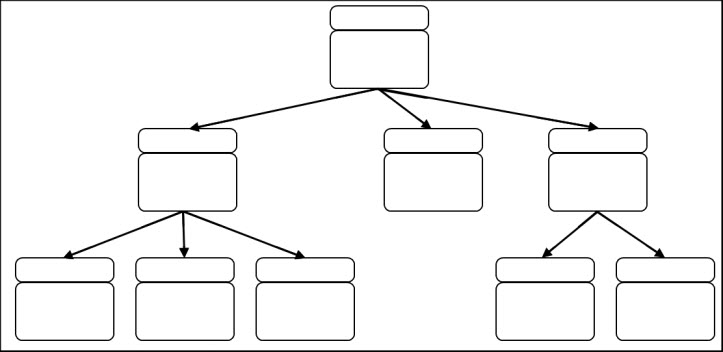
Before Behavior Trees: Events
- We need an abstraction of the game data
- The simplest approach is to represent agent knowledge using a table of numbers
- We will rely on the event system (perception data, wounds received, distance to target, ... )
- Every event will transform the agent knowledge
Before Behavior Tress: Agent Knowledge
- The agent knowledge is added as we need for game specific purposes
- Must be as short and easy to read as possible
- E. g. : The agent sees an enemy. It will receive "Enemy_Seen" event. This will change the Agent knowledge, now the flag "Can_See_Enemy" is 1
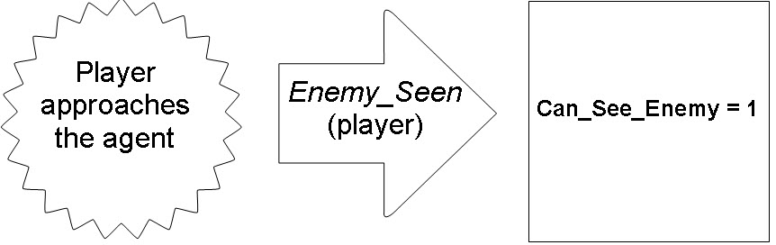
- Agent knowledge is the first filter we will use to simplify world complexity
- Easy to read, pack and debug
- Now Behavior Tree can focus on taking decisions
- E. g. of table numbers could be:
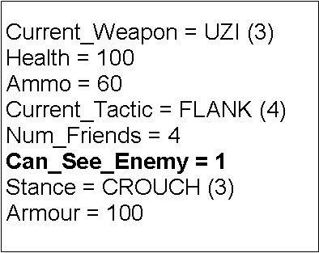
The Tree: Condition Checks
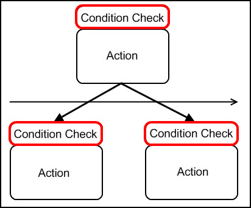
Condition Checks will run an expression using the agent knowledge to see if we can select this node:
- if Enemy_Seen == 1
- if (Num_Friends - Num_Enemies) > 1
The Tree: Actions
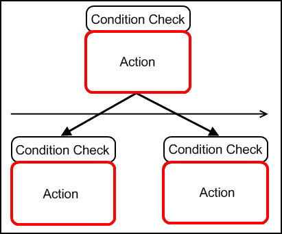
- The Action is a piece of code (normally script code) that will be executed if this node is valid
- If current node is not a leaf node, test children
- 99% of the time, only leaf nodes will contain Actions
The Tree: Child Execution
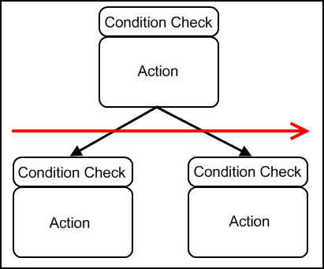
- Children execution is evaluated in order (left to right in this case) of importance
- There are more ways to select children, but this one is the most common by far
The Tree: Sample Soldier
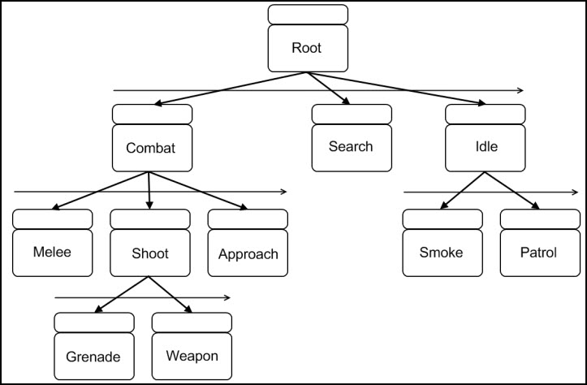
We will stop at the first leaf node that pass the condition check
The Tree: Execution Example 1
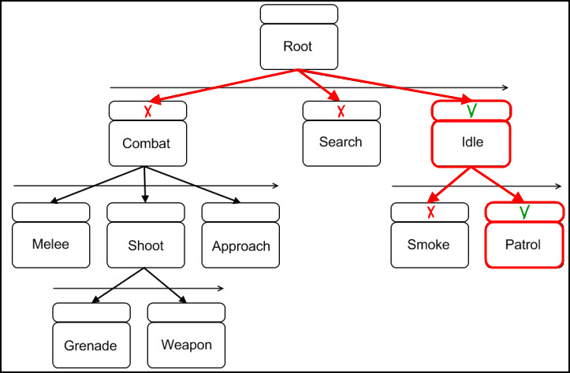
Game starts: tree is updated and runs the Action: Patrol, since rest of nodes were rejected
The Tree: Execution Example 2
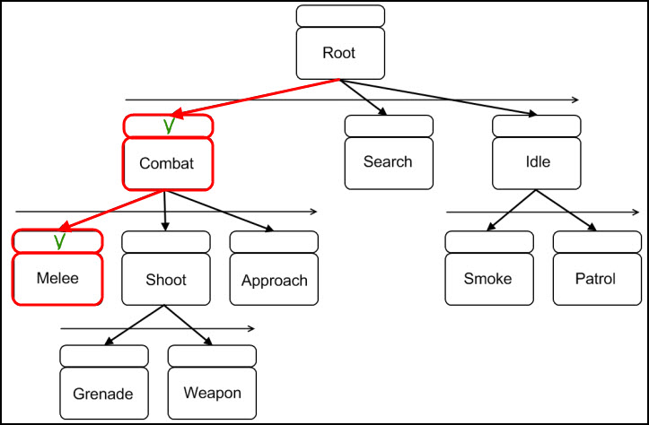
Player sneaks behind the agent, but it manages to hear the player! The agent will go to melee node
The Tree: Adding Complexity
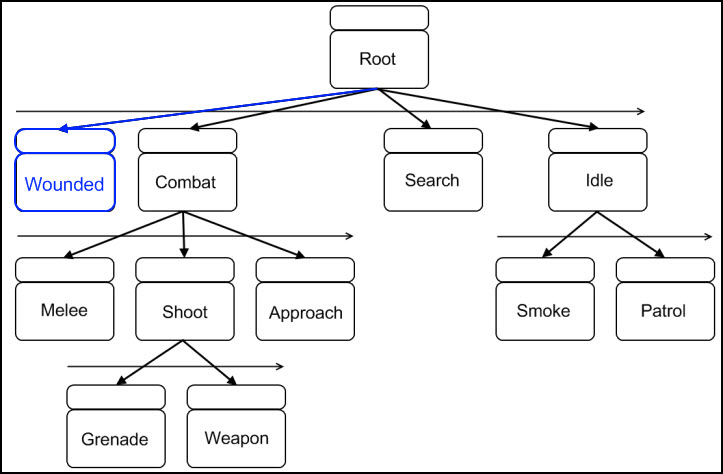
Game designer asks us to add a new behavior "wounded" that will drop the NPC to the ground
The Tree: Adding Variations 1
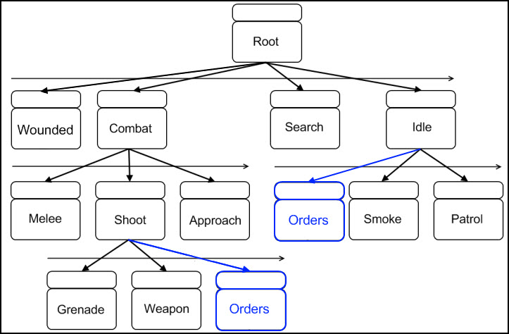
Now game designers asks us to add new "captain" NPC: It will give orders in and out of combat
The Tree: Adding Variations 2
- Variations are just a value in the agent knowledge (I_am_captain = 0/1)
- This means we can change them anytime: we could have another NPC taking the role of captain when the first captain dies
- If the differences are heavy enough, we could just use a complete new tree for the captain
- Beware: as we start adding complexity and variations our trees can grow large! we need to keep them simple
Coordinating Agents
Coordination: Synchronized behavior change between 2 or more agents while the game context makes sense, from now on "tactic"
We will need a manager that will monitor behavior tree activity. Each tactic just have a name and minimum - maximum number of candidates:
Example: Tactic "Flank". Based on design requirements, we decide that we will need at least two candidates (one to distract while the other flanks) and a maximum of 3 (one distracts, two others flank)
We will place hooks on certain nodes that will be in charge of identifying an agents as a good candidate
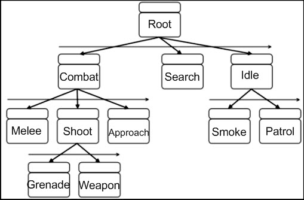
Following the previous example, we consider that agents ready to fire are good candidates for flanking
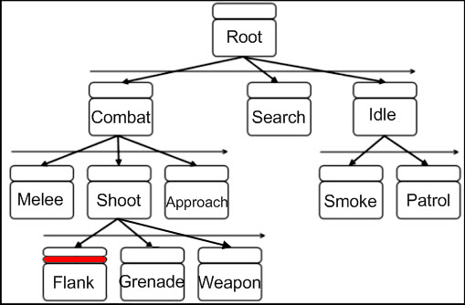
If an agent happens to visit the Flank node and pass the initial condition, he will be remembered as a good candidate but rejected from Flanking
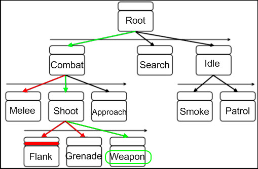
When we detect that we have enough candidates to start the tactic, we will "open" the access to the tactic and re-evaluate candidate's trees
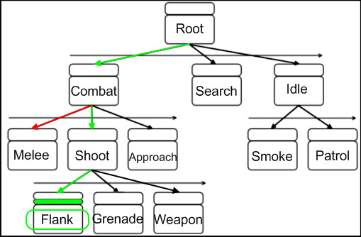
Coordinating Agents: Hints
- The tactics can be a branch node!
- One single agent could be in different tactics at the same time
- We could spread the tactics across different trees
- If we have more candidates than what is needed we will have to keep sorting and just pick the most relevant ones
- We could also specify a "Minimum candidates for the tactic to be running" that could be less that the ones needed to start the tactic
- A Tactic can have multiple instances (we could have 6 soldiers doing flanking in 2 groups of 3)
Coordinating Agents: Examples
- Only throw grenades when other agent is shooting
- Talk to other "relaxed" soldier
- Control the amount of agents shooting / using grenades / giving orders / etc ...
- When players are separated from each other, 2 agents suppress and 2 other rush them
Note: For group coordinating there are 2 sync modes available, 'end' and 'task', by default this is set to 'task' which means the different participants will wait at each other during execution of the group coordination. 'end' means they will run independently and sync when their tasks are done
Conclusions
- Behavior Trees are a great tool for decision taking
- Their simplicity let us easily spot nodes where coordination could potentially happen
- There is still room for innovation
- You can adapt the idea for your specific needs
References
- D. Isla, "Handling Complexity in the Halo 2 AI", GDC 2005
- Various speakers, "Three Approaches to Halo-style Behavior Tree AI", GDC 2007
- D. Isla, "Halo 3 - Building a Better Battle", GDC 2008
- A. J. Champandard, www.aigamedev.com
- Various authors, www.ai-blog.net